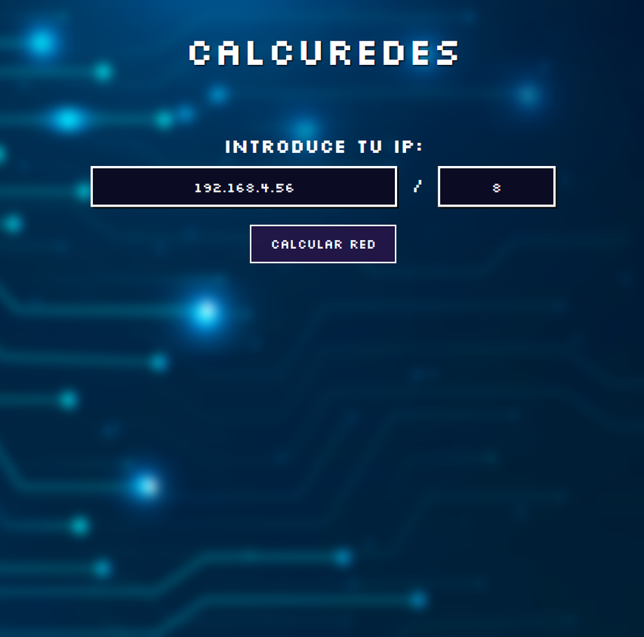
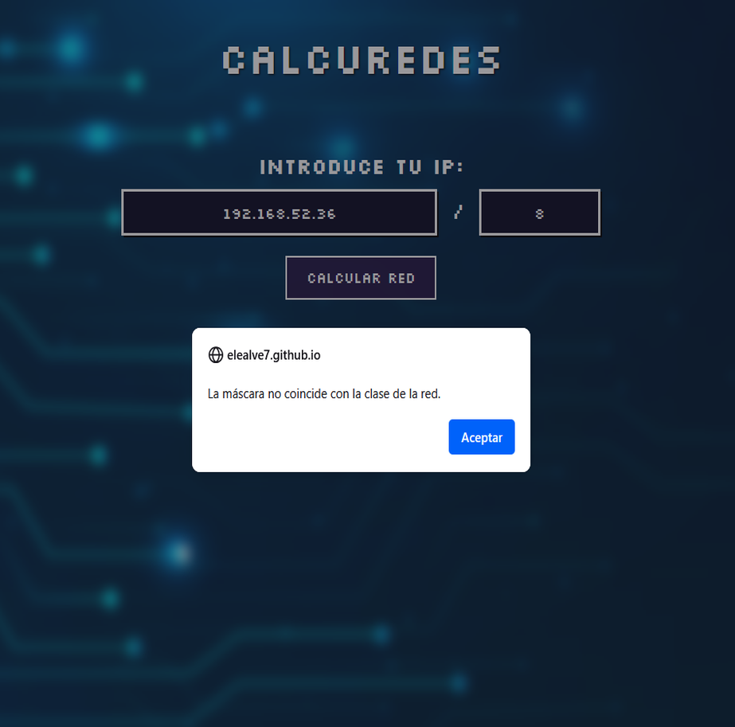
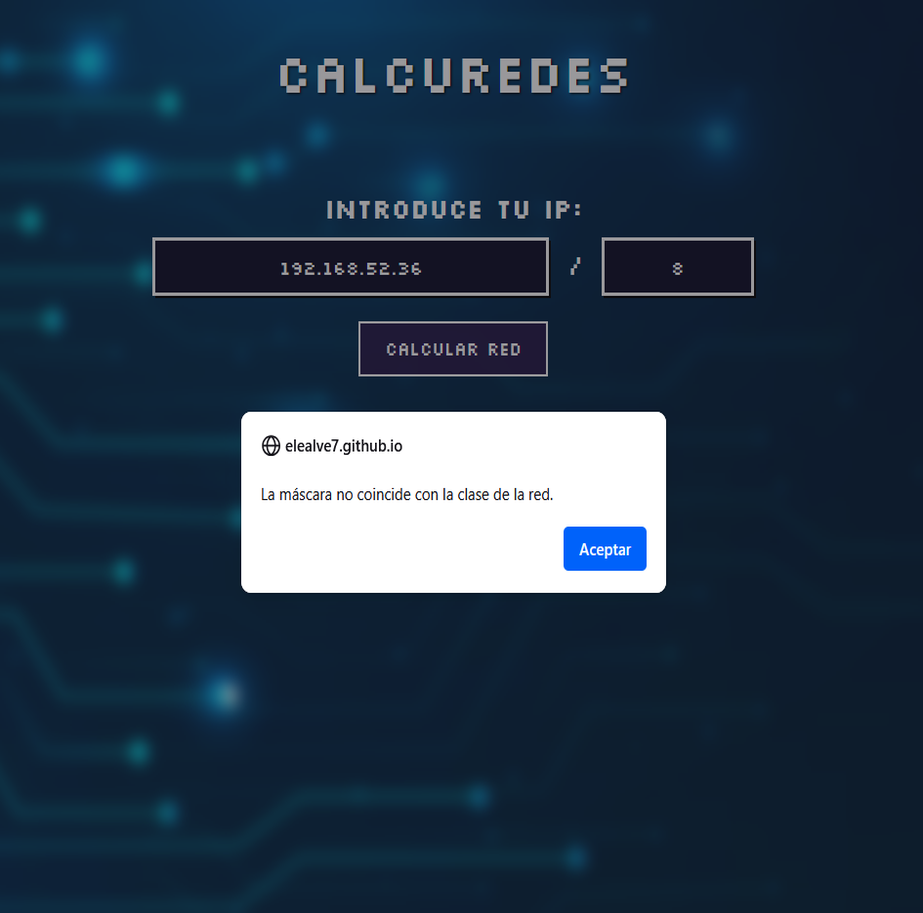
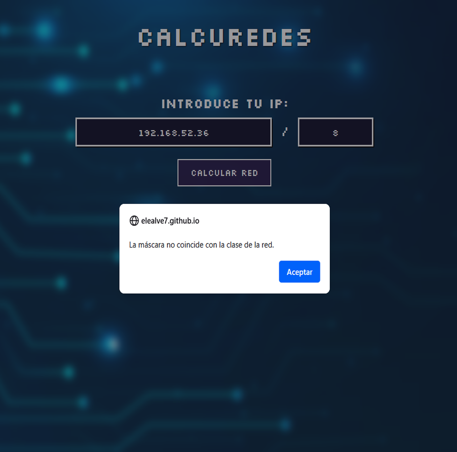

Proyecto Subredes (HTML, CSS y Javascript)
Este proyecto es una herramienta web diseñada para realizar cálculos relacionados con redes informáticas, como la conversión de direcciones IP y cálculos de subredes. Está orientado al aprendizaje y práctica de conceptos de redes y programación front-end.
Características principales:
- Interfaz desarrollada con HTML y CSS.
- Funcionalidades implementadas con JavaScript.
- Conversión de direcciones IP a binario.
- Cálculo de direcciones de red y futuras mejoras previstas (como dirección de broadcast)
Enlace a subredes: elealve7.github.io/subredes/


 

